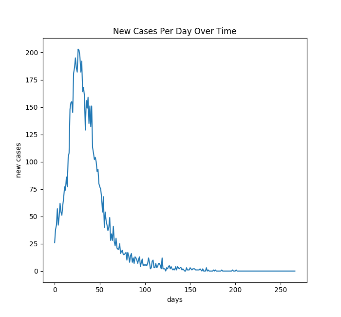
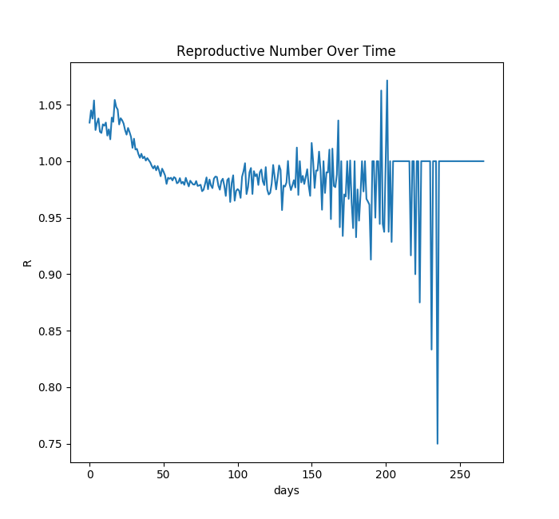
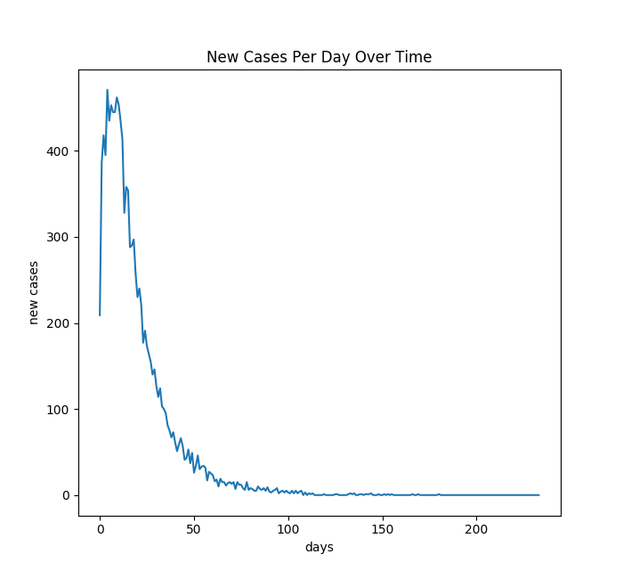
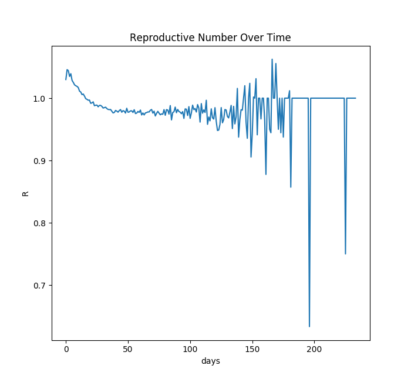
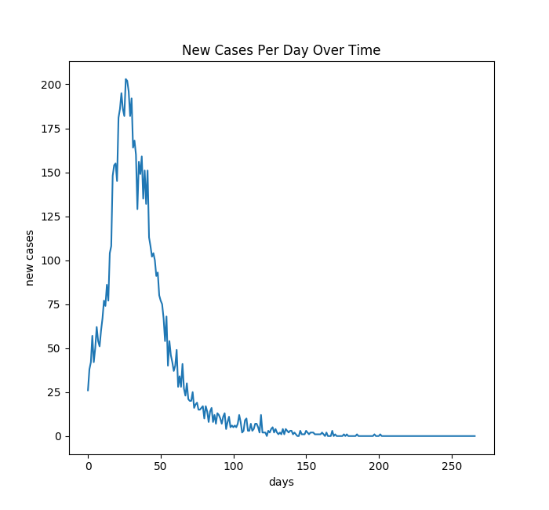
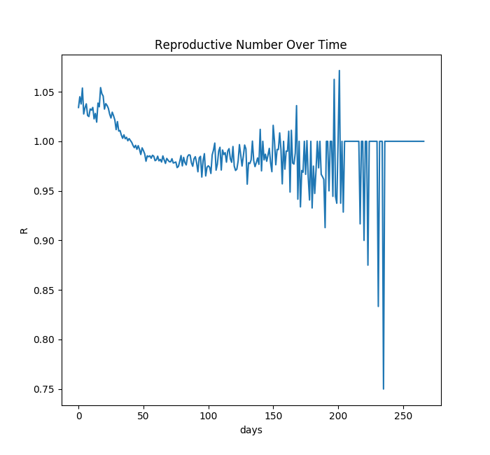
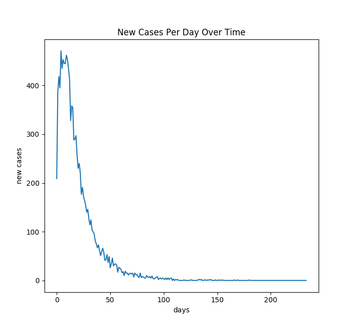
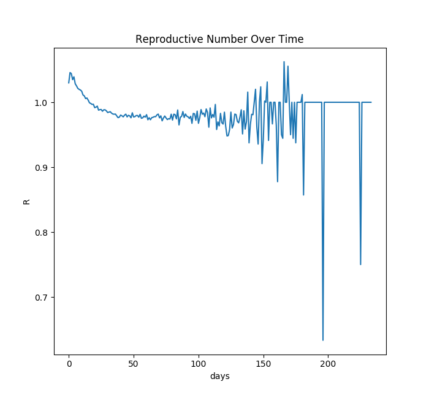

Simulations
Case 1: few starting infected, no students
 Case 2: few starting infected, with students


Case 3: many starting infected, no students
 Case 4: many starting infected, with students


In an email sent on March 11, President Ryan announced that the University of Virginia would take major operational changes to slow the spread of the COVID-19 disease in the University of Virginia community. UVA would soon move all classes online and effectively prohibit students from returning to grounds for the rest of the spring semester. At the time, these changes were met with much controversy. In the coming weeks after the decision, not only the university community would be affected by this decision. Fourth-year students were not able to enjoy their last semester on grounds or have their graduation ceremony; but also small businesses and restaurants which depend on students had to close, jobs were lost and, overall, it is clear that the Charlottesville community has also been economically impacted by this decision.
In this project, we try to understand how much did this decision taken by the University diminish the spread of the disease in Charlottesville. To do so, we simulate a contrafactual: how much had the spread of the disease been if no decision was taken and students came back to grounds after the spring break?
To build this simulation we used a model that incorporates historical epidemiological parameters of the COVID-19 spread, in combination with a dataset from NASA approximating Charlottesville’s geographical distribution of its population, population density and demographics. https://sedac.ciesin.columbia.edu/data/set/gpw-v4-admin-unit-center-points-population-estimates-rev11/docs
Case 1: few starting infected, no students
 Case 2: few starting infected, with students
Case 3: many starting infected, no students
 Case 4: many starting infected, with students
Note that these simulations, like all disease simulations, are very limited. There is huge uncertainty, and the exact spread rate is very hard to predict.
Additionally, these simulations do not capture the effects of hospitalization and pressure on the medical system. Spikes in hospitalization cause increases in the mortality rate. This would likely further exacerbate the deaths in the scenarios where UVA students return, since the quick increase in spread would add pressure on UVA Hospital.
Finally, many of the parameters of the simulation could be further tuned by regressing on datasets from other affected areas. For example, disease spread radius, incubation period, and recovery rate were all estimated ad hoc from figures seen in news articles, but could be improved by fitting probability density functions to data from a similar location, like a university-town in Italy.
Despite these shortcomings, the simulation is still effective at showing the relative differences between the scenarios of interest. We hope that viewers learn from spirit of the simulations, but do not necessarily recommend making reopening and returning decisions based on these results.
When 1% of the population started sick, preventing the return of UVA students reduced total deaths by 40% from 187 to 112. When 10% of the population started sick, no student return reduced total deaths by 34% from 312 to 206.
Most of the deaths are elderly residents, not students. However, the students, despite being largely geographically isolated from the restart of Charlottesville, still contribute to the overall spread rate, and thus deaths.